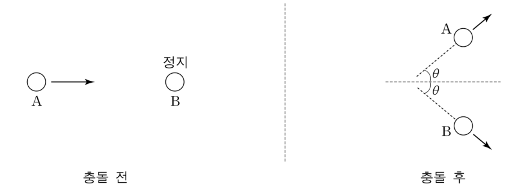

포퍼의 반증주의로 본 탐구 과정 — 러더퍼드 산란·옴의 법칙 실험 평가, 상대론적 대칭 탄성 충돌Popper's falsificationism: Rutherford scattering, students' Ohm's-law inquiry · symmetric relativistic elastic collision
포퍼(K. Popper)는 과학 지식의 생성과 변화 과정에 있어서 귀납의 한계를 지적하면서 이론 생성 과정보다는 이론 검증 과정의 중요성을 역설하였다. 포퍼는 과학자들의 탐구 과정이 아래의 <관점>에 제시된 논리적 과정을 따르며, 이러한 논리적 과정이 순환하면서 과학은 합리적으로 진보한다고 주장하였다. <상황 1>은 현대물리학의 발전에 있어서 중요한 탐구 과정의 한 사례를, <상황 2>는 학교에서 벌어지는 과학 탐구 과정의 한 사례를, <상황 3>은 산란의 한 예를 단순화한 경우를 나타낸 것이다. 【30점】
과학은 문제에서 출발한다. 과학자는 검증 가능한 여러 가지 가설을 통해 그 문제를 해결하려고 시도한다. 과학자는 가설의 오류를 탐색하고 오류가 있는 가설을 제거하기 위해 노력한다.
알파 입자의 다양한 특성을 연구하던 러더퍼드(E. Rutherford)는 알파 입자 실험의 큰 장애물이었던 산란 현상을 본격적으로 탐구해 보기로 결심하고 가이거(H. Geiger), 마스덴(E. Marsden)과 함께 진공 속에서 얇은 금속박(metal foil)으로 진행하는 알파 입자의 산란 현상을 측정하는 실험을 수행했다. 1년여에 걸친 정교한 실험 끝에 알파 입자가 약 8천 개 중의 하나 꼴로 매우 드물게 90도 이상의 둔각으로 산란된다는 사실을 발견했는데, 이는 당시의 원자 구조에 대한 지식으로는 도저히 설명할 수 없는 결과였다.
러더퍼드는 이처럼 둔각으로 산란되는 현상을 설명하기 위해 여러 가지 대안들을 모색했으며, 결국에는 ‘알파 입자들이 수많은 원자들과 여러 차례 충돌하다가 우연히 다시 정면으로 돌아온다.’는 가설을 제안했다. 하지만 이 가설은 실험적으로 확인된 둔각 산란 현상과 정확히 들어맞지는 않았고 결국 폐기되었다. 다른 대안을 찾는 계속적인 시도 끝에 그는 ‘원자 대부분은 텅 빈 공간이며 양전하가 원자 중심의 매우 작은 부피 안에 밀집되어 있어서 알파 입자를 둔각으로도 산란시킨다.’는 가설을 세울 수 있게 되었다. 이 가설로부터 유도되는 산란 공식은 가이거와 마스덴이 실험적으로 얻은 결과와 일치하였다. 이론으로부터 도출한 공식과 실험 결과가 일치하는 것을 확인한 러더퍼드는 원자의 유핵(有核) 모형을 주장할 수 있었다.
러더퍼드의 산란 실험으로부터 얻어진 유핵 모형은 원자에 대한 이해에 획기적인 진보를 가져왔지만, 당시의 전자기학 이론과 상충한다는 점과 원자에서 방출되는 복사 에너지가 불연속적이라는 관찰 결과 때문에 새로운 문제 상황을 맞게 되었다.
학생들이 옴의 법칙을 검증하기 위하여 꼬마전구, 건전지, 전압계, 전류계 등으로 회로를 구성하여 실험을 하였다. 실험 결과, 전압과 전류의 그래프는 직선 형태에서 약간 벗어났으며 전류가 증가할수록 그 차이가 심하게 나타났다. 김 교사는 학생들에게 이 실험 결과로부터 어떤 후속 탐구가 가능할 것인지 생각해 보고 그 이유를 말하도록 하였다.
철수: 모든 실험에는 오차가 있어요. 이 정도의 차이는 실험에서 우연히 발생하는 오차라고 할 수 있고, 따라서 이 결과에는 아무런 문제가 없어요. 이 실험에 대해 더 이상의 탐구는 필요 없어요.
영희: 전류가 증가함에 따라 그 차이가 심해지는 경향을 보이기 때문에, 이것을 실험에서 우연히 발생하는 오차라고 할 수는 없고 뭔가 다른 원인이 있을 거예요. 저항값이 전류에 따라 변했다고 해 버리면 이 실험 결과로도 옴의 법칙을 충분히 설명할 수 있어요.
민수: 전류가 증가함에 따라 그 차이가 심해지는 경향을 보이는 것은 뭔가 다른 문제 때문이라고 생각해요. 열이 날수록 저항값이 커져서 그런 게 아닐까요? 꼬마전구 대신에 열이 덜 발생하는 탄소 저항으로 바꾸어 실험하여 전압과 전류가 비례하는 결과를 얻는다면, 옴의 법칙은 확실하게 증명될 거예요.
그림과 같이 상대론적 총 에너지가 \(E_0\)인 입자 A가 정지해 있던 입자 B와 탄성 충돌한 후, 각각 동일한 각 \(\theta\)로 산란되었다. A와 B의 정지 질량은 \(m\)으로 동일하다.

<관점>을 근거로 과학의 탐구 과정을 세 단계로 나누어 설명한 후, 이를 적용하여 <상황 1>에 나타난 러더퍼드의 탐구 과정을 설명하고, <상황 2>에 나타난 세 학생의 응답을 앞에서 설명한 <관점>의 탐구 과정 세 단계에 근거하여 평가하시오. 또한, 물리 탐구를 지도할 때 고려할 점을 <관점>의 탐구 과정에 따라 논하시오. [20점]
<상황 3>에서 산란각 \(\theta\)의 표현식을 \(m\), \(E_0\), 빛의 속력 \(c\)로 나타내고, 이로부터 충돌 전 A의 속력이 \(c\)보다 매우 작은 경우와 \(c\)에 매우 가까운 경우로 나누어 산란각의 근사값을 구하시오. 또한 이를 통해 충돌 전 A의 속력에 따른 산란각의 변화에 대해 추론하시오. [10점]
(확장) 대칭이 아닌 일반적인 상대론적 탄성 충돌에서 두 입자 사잇각 \(\theta_A+\theta_B\)는 90°보다 큰가, 작은가?
정답모범 답안 요약
| 문항 | 모범 답안 (요약) | 검증 |
|---|---|---|
| 1-1 | 세 단계 = ① 문제 인식 ② 검증 가능한 가설 제안 ③ 반증 시도로 오류 제거(순환). 러더퍼드: 둔각 산란(문제) → 다중 충돌 가설 제거, 핵 가설의 산란 공식이 실험과 일치(오류 제거 통과) → 유핵 모형 → 전자기학 상충·불연속 스펙트럼(새 문제). 철수: 문제 인식 실패. 영희: 문제 인식은 했으나 임시방편 가설로 반증 불가. 민수: 세 단계를 따르나 ‘확실히 증명’은 포퍼와 상충. 지도: 변칙을 문제로, 반증 가능한 가설·예측, 결정적 실험과 잠정적 결론. | 공식 정답 미공개 — 포퍼 『추측과 논박』의 P₁→TT→EE→P₂ 도식에 따른 모범 답안. 모의실험: 텅스텐 필라멘트 모형(저항–온도)으로 민수 가설의 물리적 타당성 확인. |
| 1-2 | \(\cos\theta=\sqrt{\dfrac{E_0+mc^2}{E_0+3mc^2}}\) (또는 \(\tan^2\theta=\dfrac{2mc^2}{E_0+mc^2}\)). \(v\ll c\): θ ≈ 45°(사잇각 90°). \(v\approx c\): θ ≈ \(\sqrt{2mc^2/E_0}\) → 0. 속력이 클수록 θ가 45°에서 0°로 단조 감소. | 모의실험: 보존 법칙을 수치로 푼 θ와 질량중심계 90° 산란을 로런츠 변환한 θ(tanθ = 1/γ_cm)가 표현식과 일치 |
| 확장 1 확장 | 사잇각 < 90° (고전 극한에서 90°) | 모의실험: 대칭 경우 2θ < 90°가 E₀ > mc²에서 항상 성립 |
1소문항별 풀이 (AI 모범 답안)
1-1 20점
<관점>을 근거로 과학의 탐구 과정을 세 단계로 나누어 설명한 후, 이를 적용하여 <상황 1>에 나타난 러더퍼드의 탐구 과정을 설명하고, <상황 2>에 나타난 세 학생의 응답을 앞에서 설명한 <관점>의 탐구 과정 세 단계에 근거하여 평가하시오. 또한, 물리 탐구를 지도할 때 고려할 점을 <관점>의 탐구 과정에 따라 논하시오. [20점]
1탐구 과정 세 단계
- 문제 인식: 기존 이론·지식으로 설명되지 않는 현상(변칙)에서 출발한다.
- 가설(추측) 제안: 문제를 해결할 검증(반증) 가능한 잠정적 가설을 여러 개 제안하고, 각 가설에서 시험 가능한 예측을 연역한다.
- 오류 제거(반박): 실험·관찰로 예측과 결과를 비교해 오류가 있는 가설을 제거한다. 살아남은 가설도 ‘참으로 증명’된 것이 아니라 잠정적으로 받아들여지며, 새로운 문제를 낳아 과정이 순환한다.
2<상황 1> 러더퍼드
| 단계 | 러더퍼드의 탐구 |
|---|---|
| 문제 | 약 8천 개 중 1개의 알파 입자가 90° 이상 둔각으로 산란 — 당시 원자 모형(톰슨)으로 설명 불가 |
| 가설 | 가설 1: 여러 번의 작은 충돌이 누적되어 우연히 되돌아옴 / 가설 2: 양전하가 중심의 아주 작은 부피(핵)에 밀집 |
| 오류 제거 | 가설 1은 예측(다중 산란 확률)이 둔각 산란 빈도와 맞지 않아 제거. 가설 2에서 연역한 산란 공식(\(N\propto1/\sin^4(\theta/2)\))이 가이거·마스덴의 측정과 일치 → 반증 시도를 견딤 → 유핵 모형 채택 |
| 새 문제 | 유핵 모형은 고전 전자기학(가속 전자의 복사 → 붕괴)과 상충, 불연속 스펙트럼 미설명 → 새로운 문제(→ 보어 모형)로 순환 |
3<상황 2> 세 학생 평가
- 철수: 전류가 클수록 체계적으로 커지는 편차를 ‘우연 오차’로 치부 → 문제 단계에 진입하지 못함. 이론에 맞지 않는 결과를 문제로 인식하지 않아 탐구가 시작되지 않는다(부정적 평가).
- 영희: 체계적 경향을 문제로 인식한 점은 적절. 그러나 ‘저항값이 전류에 따라 변했다고 해 버리면 옴의 법칙으로 설명된다’는 것은 원인을 시험할 수 있는 형태가 아닌 임시방편(ad hoc) 가설로 이론을 구제하는 것 — 어떤 결과도 설명하게 되어 반증 불가능해지고 오류 제거 단계가 없다.
- 민수: 문제 인식(체계적 편차) → 검증 가능한 가설(열 → 저항 증가) → 가설을 시험할 실험(탄소 저항으로 교체, 발열 변인 통제)까지 제시해 세 단계를 가장 잘 따른다. 다만 ‘비례하면 옴의 법칙은 확실하게 증명된다’는 결론은 포퍼의 관점과 어긋난다 — 일치하는 결과는 가설을 반증하지 못했을 뿐(잠정적 확인), 증명이 아니다. 또 반증을 노리는 실험(예: 전구를 냉각하거나 펄스 측정으로 온도를 일정하게)도 고려할 수 있다.
4지도 시 고려할 점
- 문제 단계: 예상과 다른 결과를 ‘실패·오차’로 덮지 않고 탐구의 출발점으로 삼게 한다. 반복 측정·그래프로 우연 오차와 체계적 편차를 구분하는 방법을 지도한다.
- 가설 단계: 여러 경쟁 가설을 내게 하고, 각 가설에서 ‘무엇을 관찰하면 틀렸다고 할 수 있는지’ 예측을 미리 쓰게 한다(반증 가능성). 이론을 지키기 위한 임시방편 가설을 경계한다.
- 오류 제거 단계: 변인을 통제한 결정적 실험(온도 일정, 탄소 저항 vs 전구)을 설계하고, 결과를 ‘증명’이 아니라 ‘반증되지 않음(잠정적 수용)’으로 표현하게 하며, 새로 생긴 문제(왜 필라멘트 저항이 온도에 따라 커지는가?)로 탐구를 순환시킨다.
민수의 응답을 무조건 ‘모범’으로 평가하고 ‘확실하게 증명’이라는 귀납주의적 결론을 놓치는 경우. 영희를 ‘가설을 세웠다’고 높게 평가하는 경우 — 시험 가능한 형태가 아님에 주의.
1-2 10점
<상황 3>에서 산란각 \(\theta\)의 표현식을 \(m\), \(E_0\), 빛의 속력 \(c\)로 나타내고, 이로부터 충돌 전 A의 속력이 \(c\)보다 매우 작은 경우와 \(c\)에 매우 가까운 경우로 나누어 산란각의 근사값을 구하시오. 또한 이를 통해 충돌 전 A의 속력에 따른 산란각의 변화에 대해 추론하시오. [10점]
1보존 법칙
충돌 후 대칭이므로 \(E_A=E_B=E=\dfrac{E_0+mc^2}{2}\), \(|\vec p_A|=|\vec p_B|=p\). 수직 성분은 자동 상쇄, 입사 방향: \(p_0=2p\cos\theta\).
2θ의 표현식
\(p_0^2c^2=E_0^2-m^2c^4\), \(p^2c^2=E^2-m^2c^4=\dfrac{(E_0+mc^2)^2-4m^2c^4}{4}=\dfrac{(E_0-mc^2)(E_0+3mc^2)}{4}\).
\(\cos^2\theta=\dfrac{(E_0-mc^2)(E_0+mc^2)}{(E_0-mc^2)(E_0+3mc^2)}\) → \(\boxed{\cos\theta=\sqrt{\dfrac{E_0+mc^2}{E_0+3mc^2}}}\) (동치: \(\tan^2\theta=\dfrac{2mc^2}{E_0+mc^2}\)).
3두 극한
\(v\ll c\): \(E_0\approx mc^2\) → \(\cos^2\theta\approx\dfrac{2}{4}=\dfrac12\), \(\theta\approx45^\circ\) (두 입자 사이 각 90° — 고전 역학의 같은 질량 탄성 충돌 결과).
\(v\to c\): \(E_0\gg mc^2\) → \(\cos\theta\to1\), \(\theta\approx\sqrt{\dfrac{2mc^2}{E_0}}\to0\) (두 입자가 거의 앞쪽으로 몰림).
4추론
\(\cos^2\theta=\dfrac{\gamma+1}{\gamma+3}\) (\(E_0=\gamma mc^2\))은 γ에 대해 증가 함수 → 충돌 전 A의 속력이 커질수록 산란각 θ는 45°에서 0°로 단조 감소한다. 질량중심계에서는 늘 90° 산란이지만, 실험실계로 로런츠 변환하면 \(\tan\theta=1/\gamma_{cm}\)로 앞쪽으로 접힌다(헤드라이트 효과).
운동 에너지와 총 에너지를 혼동(\(E_0\)를 운동 에너지로 보고 \(E_0=2E\)로 쓰는 실수). 비상대론적 결과(90°)를 그대로 쓰고 상대론 효과를 놓치는 경우.
확장 1확장 문항
(확장) 대칭이 아닌 일반적인 상대론적 탄성 충돌에서 두 입자 사잇각 \(\theta_A+\theta_B\)는 90°보다 큰가, 작은가?
14원 운동량
\((P_A+P_B)^2=(P_A'+P_B')^2\), 각 \(P^2=m^2c^2\) → \(P_A\cdot P_B=P_A'\cdot P_B'\). B 정지: \(E_0mc^2=E_A'E_B'-\vec p_A'\cdot\vec p_B'c^2\).
\(E_A'+E_B'=E_0+mc^2\), \(E'=mc^2+K\)로 쓰면 \(\vec p_A'\cdot\vec p_B'c^2=K_AK_B\ge0\) → \(\cos(\theta_A+\theta_B)\ge0\), 사잇각 ≤ 90°.
고전 극한에서는 \(K_AK_B\)가 \(p_A'p_B'c^2\)에 비해 무시할 만큼 작아 정확히 90°가 된다.
2채점 기준 (예시)
공식 채점 기준은 공개되지 않는다. 배점과 답안 요소를 바탕으로 만든 예시 채점 기준이다.
| 문항 | 배점 | 채점 요소 (예시 답안의 핵심 표현) |
|---|---|---|
| 1-1 | 4 | <관점>의 탐구 과정 세 단계(문제–가설–오류 제거)를 정확히 설명 |
| 1-1 | 5 | <상황 1>을 세 단계와 새 문제의 순환으로 설명 |
| 1-1 | 6 | 철수·영희·민수 응답을 단계별 근거로 평가(각 2점 내외) |
| 1-1 | 1 | 민수의 ‘증명’ 표현이 포퍼 관점과 어긋남을 지적 |
| 1-1 | 4 | 탐구 지도 시 고려점을 세 단계에 따라 논함 |
| 1-2 | 3 | 상대론적 에너지·운동량 보존식 수립 |
| 1-2 | 3 | cos θ(또는 tan θ) 표현식 유도 |
| 1-2 | 1.5 | v ≪ c에서 θ ≈ 45° |
| 1-2 | 1.5 | v ≈ c에서 θ → 0 |
| 1-2 | 1 | 속력 증가 → θ 감소 추론 |
| 합계 30점 | ||
3출제 의도·검토
출제 의도
- 포퍼의 반증주의(추측과 논박)를 과학사 사례(러더퍼드)와 학교 탐구 사례(옴의 법칙 실험)에 적용·평가하고, 이를 탐구 지도 원리로 바꿀 수 있는가.
- 산란(1-2)은 상황 1의 ‘산란’을 내용학으로 연결 — 상대론적 운동량·에너지 보존과 극한 해석.
검토 의견
43D 모의실험 — 1번: 꼬마전구의 V–I(1-1)와 상대론적 대칭 탄성 충돌(1-2) (Space 재생/정지 · R 처음으로 · F 전체화면)
5고등학생 지도 — 고교 교육과정과 잇기
고교 교육과정과의 연결
- 물리학Ⅰ 전기 회로(옴의 법칙)·원자 모형(러더퍼드)
- 물리학Ⅱ 특수 상대성 이론(질량–에너지)
- 과학사·과학철학 읽기 자료(통합과학·과학사)
고등학생용 변형 문항
- 꼬마전구로 옴의 법칙 실험을 하면 왜 직선이 안 나올까? 확인 실험을 설계해 보자.
- 러더퍼드 실험에서 핵 가설이 ‘증명’되었다고 할 수 있을까? 그 뒤 어떤 새 문제가 생겼나?
- 당구공(같은 질량) 정면이 아닌 탄성 충돌 후 두 공의 사잇각은? (90°)
6수업 활용 안내
수업 흐름 (50분)
- 도입 (5분) — 꼬마전구 V–I 그래프 제시: ‘이 결과를 어떻게 볼까?’
- 포퍼의 탐구 과정 (12분) — <관점> 세 단계 정리, 러더퍼드 사례 대응표
- 학생 응답 평가 (13분) — 철수·영희·민수 응답을 단계별로 평가하는 모둠 토의, 모의실험(1-1)으로 민수 가설 검토
- 상대론적 충돌 (15분) — 1-2 유도와 극한, 모의실험으로 θ–γ 확인
- 정리 (5분) — ‘증명’ 대신 ‘반증되지 않음’으로 결론 쓰기
자주 나오는 오개념
- “실험값과 이론값의 차이는 모두 오차다”(철수)
- “이론에 맞게 조건을 덧붙이면 해결된다”(영희의 임시방편 가설)
- “결과가 맞으면 이론이 증명된다”(민수)
- “충돌 후 사잇각은 언제나 90°”(상대론 무시)
평가 포인트
- 포퍼의 세 단계를 사례에 대응시키는가
- 학생 응답의 장단점을 근거로 평가하는가
- 상대론적 보존식을 세우고 극한을 해석하는가
더 나아가기
옴의 법칙 실험을 ‘반증 시도’ 형태로 재설계: 꼬마전구를 얼음물에 담그거나 짧은 펄스 전류로 측정해 온도 변인을 통제하고, 민수의 가설이 반증될 수 있는 조건을 명시한다.